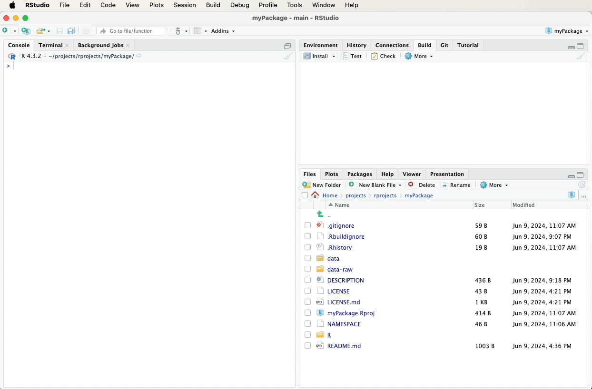
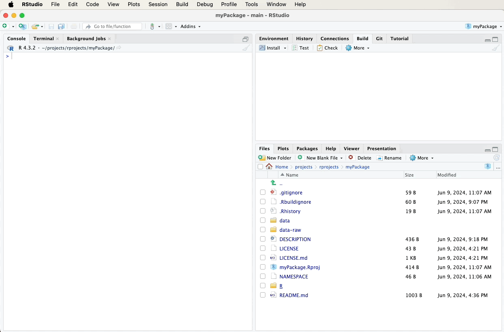
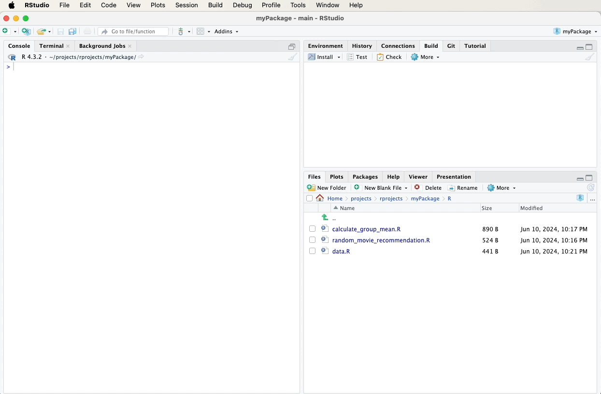
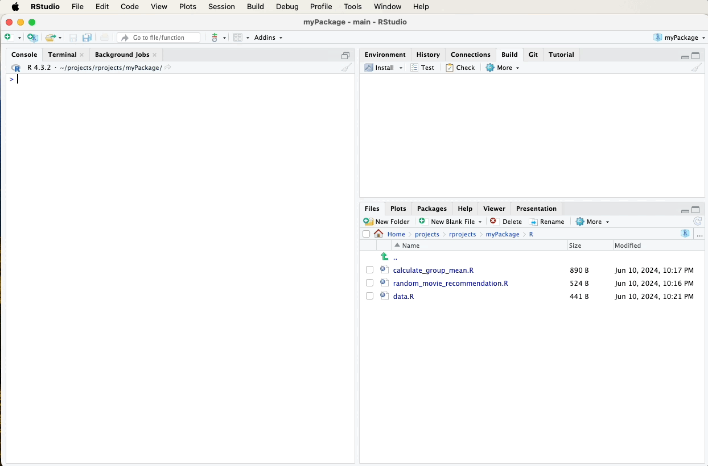

11 Documentation
In this chapter, we’ll focus on documenting the functions and datasets in our package. Proper documentation is essential for helping users understand how to use your package effectively.
11.1 roxygen2 skeletons
When documenting functions and datasets in an R package, it is recommended to use roxygen2 skeletons. These are snippets of a kind of markup language, written directly above your functions and dataset definitions. They serve as a convenient way to generate Rd (R documentation) files, which provide detailed information about the usage, parameters, and examples for your functions and datasets. In other words, roxygen2 is the front end that produces Rd files from your comments in your .R files.
So, the ground rule is:
Thou shalt never directly create or edit Rd (R documentation) files
— rather, always document your functions and example datasets using roxygen2 comments.
11.2 Generating Skeletons
To create roxygen2 skeletons in RStudio:
- Open the R script file that contains your function or dataset definition.
- Place the cursor inside the function or dataset definition.
- Navigate to the “Code” menu at the top of RStudio.
- Select “Insert Roxygen Skeleton” from the dropdown menu.
RStudio will automatically generate a roxygen2 comment skeleton with
placeholders for you to fill out, such as @param, @return, and
@examples.
This process is explained in more detail and with videos below when I
show how to create documentation for random_movie_recommendation and
calculate_group_mean.
11.3 Documenting Functions
Let’s start by documenting our functions using roxygen2 skeletons.
Below, we’ll add roxygen2 comments to our
random_movie_recommendation and calculate_group_mean functions.
11.3.1 Documenting random_movie_recommendation
To document the random_movie_recommendation function, first navigate
to the file containing this function in the bottom-right pane of RStudio
and click on it to open it. Then, fill in the following roxygen2
comments above your random_movie_recommendation function using the
“Code” menu and selecting “Insert Roxygen Skeleton”. A video below the
code will demonstrate these steps visually:
#' Random Movie Recommendation
#'
#' This function randomly recommends a movie from the `ggplot2movies` dataset.
#'
#' @return A character string representing the title of a randomly selected movie.
#' @export
#' @examples
#' random_movie_recommendation()
random_movie_recommendation <- function() {
# Load the movies dataset
data(movies, package = "ggplot2movies")
# Get the movie title at the random index
recommended_movie <- sample(movies$title, 1)
# Return the recommended movie
return(recommended_movie)
}

11.3.2 Documenting calculate_group_mean
To document the calculate_group_mean function, first navigate to the
file containing this function in the bottom-right pane of RStudio and
click on it to open it. Then, fill in the following roxygen2
comments above your calculate_group_mean function using the “Code”
menu and selecting “Insert Roxygen Skeleton”. A video below the code
will demonstrate these steps visually:
#' Calculate Group Mean
#'
#' This function calculates the mean of a numeric variable for rows where another variable has the value TRUE.
#'
#' @param df A data frame containing the data.
#' @param numeric_var A string representing the name of the numeric variable.
#' @param factor_var A string representing the name of the factor (binary) variable.
#' @return A numeric value representing the mean of the specified numeric variable for the filtered rows.
#' @export
#' @examples
#' calculate_group_mean(example_data, "Age", "Likes_Coffee")
calculate_group_mean <- function(df, numeric_var, factor_var) {
# Filter the dataframe for rows where the factor variable is TRUE
filtered_df <- df[df[[factor_var]] == TRUE, ]
# Calculate the mean of the numeric variable for the filtered dataframe
mean_val <- mean(filtered_df[[numeric_var]])
# Return the mean value
return(mean_val)
}

11.4 Documenting Datasets
Next, we’ll document our example dataset. Roxygen2 provides a way to document datasets by adding comments in a separate R script file.
11.4.1 Documenting example_data
Create a new R script file named data.R in the R directory and add the following roxygen2 comments. A video below the code will demonstrate these steps visually:
#' Example Data
#'
#' A dataset containing example data.
#'
#' @format A data frame with 5 rows and 3 variables:
#' \describe{
#' \item{ID}{A character vector representing the ID of each observation.}
#' \item{Age}{A numeric vector representing the age of each observation.}
#' \item{Likes_Coffee}{A factor vector indicating whether the observation likes coffee (TRUE) or not (FALSE).}
#' }
#' @examples
#' example_data
"example_data"

11.5 Generating Documentation
After adding the roxygen2 comments, we need to generate the
documentation files. This can be done using the devtools::document()
function, which processes the roxygen2 comments and creates the Rd
files.
Alternatively, you can use the “Document” button. It can be found in the Build tab. Click the gear-looking “More” icon and select “Document”.

11.6 Documentation to GitHub
After updating and generating your documentation, it’s important to push these changes to your GitHub repository to keep your project up-to-date and allow others to see the latest developments.
Refer to earlier sections for detailed instructions on how to commit and push changes using the Git pane in RStudio, or watch the video guide below for a visual walkthrough. A suitable commit message for documentation updates might be:

In the next chapter, we’ll test how these documents work to ensure that the documentation accurately reflects the functionality of your package.
Creating
R Packages: A Step-by-Step Guide by
Ville
Langén is licensed under
CC
BY-SA
4.0